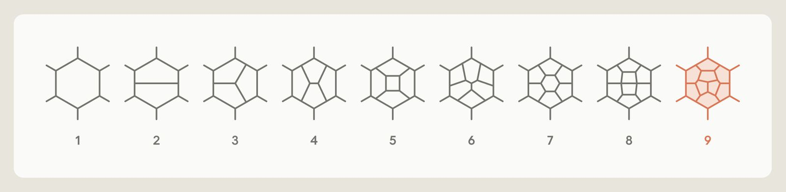

In this guest post, physicist and science writer Matt von Hippel shares what happened when he issued a challenge to AI companies regarding a problem in his former subfield of theoretical physics.

It’s not often that you issue a challenge, only to see it beaten a month later. But we’re living in unusual times.
Let me introduce myself: I’m Matt von Hippel. I used to be a theoretical physicist; these days I’m a science writer. Throughout, I’ve been a blogger, writing weekly at 4gravitons.com about physics and the people who do it.
More and more, blogging about physics has meant blogging about AI. That’s a problem, because I’m definitely not an AI expert. I’ve dabbled in it, sure. I probably know more than your grandma. But I mostly have to step back and trust the experts. And frustratingly, the experts disagree! I’ve heard from smart, well-informed people who are confident that AI is a few years away from superintelligence, and that superintelligence will be capable of truly terrifying things. And I’ve heard from smart, well-informed people who are equally confident that LLM-based AI is close to a ceiling, that models like Claude won’t even be able to do impressive work in physics, let alone conquer the world.
I’ve been reluctant to make my own predictions. Before forming an opinion, I wanted to see an LLM make progress on something familiar, something I knew was hard to do because I’d tried to do something similar myself.
In addition to that, I wanted to see an LLM do something that I expected to be computationally hard. LLMs have made impressive strides in math, certainly, and this month alone has likely changed many people's minds. But progress in math comes from new ideas, and ideas are mysterious things: one never quite knows how hard they are to find until they’re found. Computation felt more solid. I wanted to see an LLM tackle a challenge that seemed out of reach not because researchers didn’t know how to do it in principle, but because doing it seemed like the kind of thing that would take more computers and time than the researchers reasonably had access to. I wanted to see if those researchers were wrong: if a smarter, artificial researcher could use the same computers, and solve the problem anyway.
So, I issued a challenge:
“If AI companies want to impress people like me (or scare us, for that matter), then they need to tackle my old field. Show that an AI can take the kinds of computer resources an academic has access to, and solve one of the scattering amplitudes field’s big outstanding problems. Show that a computational limit everyone expected to be a problem doesn’t actually matter. Give us N=8 supergravity to seven loops, or N=4 super Yang-Mills to nine loops.”
In short: can AI solve a frontier problem in my former subfield of theoretical particle physics? And can it do it on a budget?
The challenge
My old field is a branch of theoretical particle physics called amplitudeology. When other particle physicists predict new particles, they make sure they can do the calculations to test those predictions. They compute formulas called scattering amplitudes, which let physicists use the momenta and energies of subatomic particles to calculate how likely they are to react in particular ways. If physicists can make more accurate predictions for these reactions, they can check whether results from experiments like the Large Hadron Collider match those predictions. A mismatch could be evidence for a new theory, one that could explain some of physics’ big lingering mysteries, like the nature of dark matter, or the balance between matter and antimatter in the universe.
These scattering amplitude formulas are hard to compute, so hard that physicists almost always use approximations. They do partial calculations, cut off at a specific number of “loops,” a measure of how complicated interactions between particles are allowed to get. The more “loops” they include in their calculations, the closer they get to the real answer, and the harder, computationally, the calculation is to do.
In practice, most scattering amplitude formulas have only been calculated to two loops. A few have three. The most precise prediction in particle physics you might have heard of used five. Amplitudeologists want to do better. They develop experimental new techniques, and test them on special “toy model” theories. By trying the technique with a toy model where the calculation is easier, rather than the more challenging particles of the real world, amplitudeologists can stress-test the new methods and see how far they can go.
I posted challenges for two of those toy models. The one the folks at Anthropic chose to tackle was to go up to nine loops with a particular toy model theory, called N=4 super Yang-Mills.
“Yang-Mills” is a technical name for a type of theory that explains most of the world around us. Three of the four fundamental forces of nature: electromagnetism, the strong nuclear force that holds the nuclei of atoms together, and the weak nuclear force that causes radioactive decay in things like bananas, are all Yang-Mills theories.
The “N=4 super” comes from supersymmetry. Physicists have speculated that each particle has a “supersymmetric partner,” a particle with the same charge, but of a different type, matching matter particles like electrons to force particles like photons. At one time they were optimistic these particles could explain dark matter, via undiscovered partners of more familiar particles. Those speculations used “N=1” supersymmetry. In “N=4,” each particle has four supersymmetric partners, not just one.
That surfeit of particles makes the theory very unrealistic. N=4 super Yang-Mills isn’t used as an explanation for dark matter, or for anything in the real world. Instead, amplitudeologists use it to hone their techniques, because N=4 is paradoxically easier to calculate with. The delicate balance between the different particles means only certain combinations of variables are needed, streamlining calculations.
These calculations were done with an experimental technique called a bootstrap, which ended up bizarrely well-suited for use of AI. To bootstrap an amplitude, you don’t have to take into account every possible particle interaction. You just need to know roughly what the answer ought to look like, keeping track of every possibility in computer files in a specialized alphabet. Then you start checking everything you know: predictions from other calculation techniques, rules the answer has to obey, links to related problems where the answer was easier to find. It’s a bit like Sudoku, where you begin with a grid with all possible numbers, then cross them out as you go. In the end, you’re hoping to find that only one possibility satisfies all the checks, while having enough checks left over to make sure you didn’t make a mistake.
That meant that Lance was already well set up to check if someone had handed him the next amplitude formula, with nine loops. It would be an interesting answer, not just as a validation of the bootstrap technique, but as a rare example of an amplitude with that many loops of complexity, an answer that could be worth studying in its own right.
But he hadn’t computed it, and neither had anyone else in the field. The way he found the eight-loop answer was already a bit indirect, via a surprising link to a different but related formula called a form-factor, a kind of partial amplitude involving different particles that turns out to be a bit easier to calculate. He was expecting to find the next loop even more indirectly, potentially by a different kind of AI method. If people thought it was possible to just run the usual bootstrap method for one more loop, someone would have done it.
Then people did it
Apparently, there are folks at Anthropic who read my blog.
At the end of August, Liam Fitzpatrick and Siddharth Mishra-Sharma, two physicists at Anthropic, reached out to me to say they had tackled one of the challenges in my post. After verifying the result with Lance, they talked me through how they got it.
True to the spirit of the challenge, they didn’t use millions of dollars in computer power. They used Fable 5.1, working within Claude Science, a platform scientists can pay to use. Claude Science is what folks in the biz call a “harness,” a program that uses the Claude LLM with structured rules and prompts in order to get more robust and scientifically useful behavior.
Apparently, after asking Claude which problem it was most likely to be able to tackle, they gave it a simple prompt:
“The problem is to compute the Six-particle (hexagon) amplitude in planar N=4 SYM at nine loops.”
From there, they just kept telling it to keep going, with comments like:
“I'm going to sleep and won't be available for another several hours. Keep working on this until I tell you to stop. Give me updates every 4-6 hours.”
Claude ended up doing the calculation two different ways: the original bootstrap, and the indirect form-factor approach. Either approach would have cost an end-user around one or two thousand dollars, mostly due to the expense of running Claude for so long. The bootstrap calculation, done with the Python programming language with package SymPy, took around $100 of the budget, corresponding to running 96 CPUs for a week.
Running 96 CPUs for a week might have felt like a lot when I was doing this kind of work ten years ago, but it’s pretty affordable now if you have a good reason.
As it turned out, the result wasn’t all that far away for humans either. A few days after I heard from Anthropic, we heard from Song He, an amplitudeologist at the Chinese Academy of Sciences in Beijing. Song’s group had already gotten the majority of the result. They’d used some AI assistance, based on GPT-6, but not the kind of one-shot almost human-less approach Anthropic used.
Everyone has been friendly here, which is a bit of a relief. The humans, Lance and Song and their collaborators, will get to publish the results, taking time to explain them and analyze them for the benefit of future researchers. Claude’s role is done, for now.
So, problem solved?
I set my challenge because I wanted a better sense of what current AI can do, and where it could go from here. So what have I learned?
I’d thought this could be a chance to see AI overcome a computational barrier in a surprising way. Instead, it did something it turned out humans were also able to do. Claude used known methods, with a bit more compute than people had tried to use before. It may have gotten a boost from using Python, and not Maple (Lance’s favorite program for math) or Mathematica (mine), and it may have used much better software engineering practices than we would have, but not super-intelligently so.
My biggest takeaway is that there is more low-hanging fruit out there than you’d expect. Even when a goal is simple and well-defined, sometimes it’s going to look much less achievable to experts than it actually is. There are people with a computer science background who’ve been telling me for years that amplitudeologists could make a lot more progress just by hiring a few programmers. They should feel vindicated.
It’s also noteworthy that Claude Science accomplished this in one shot, without any scientific oversight more sophisticated than “keep going.” These are finicky, messy calculations. If I’d used a week of time on 96 CPUs to do this kind of calculation, then I’d almost certainly end up using two weeks: it’s practically guaranteed I’d screw up something on the first try. I don’t know how many mistakes Claude made internally on the way, but the harness got it to the end without an outside collaborator’s input. I’m not sure that surprises me, at this point. But if you didn’t know it could do that because you’re still thinking of AI as so error-prone that it’s unusable, then this should be your takeaway: It can do this kind of thing reliably now.
Things definitely seem to be moving fast. In March, AI was accomplishing physics projects like a student: smaller-scale tasks with a lot of hand-holding and mistakes. In contrast, this is a real frontier calculation, the kind of thing normally tackled by the top experts in amplitudes. While it’s possible that this is just a much more AI-friendly problem, I don’t think it’s just that: I think the technology has genuinely gotten better.
How far can I generalize this? That I’m not sure of.
These toy model theories tend to be the focus of small sub-communities. The real-world amplitudes calculations are a wider field, with many groups trying to beat each other to the frontier. It’s possible there’s less low-hanging fruit there. But I wouldn’t count on it. I know people who work on those calculations have been increasingly using AI for coding. If people aren’t already checking whether AI science harnesses can one-shot frontier calculations there, they ought to (and they ought to have a plan for how to check the results). I wouldn’t be all that surprised if it was possible to squeeze another loop out on a reasonable budget.
Then it becomes a question for the community to discuss: where is the new frontier, and what needs to be figured out next? Unlike many problems in mathematics, amplitudes aren’t just a training ground for new methods. There’s a goal, to make predictions precise enough to compare with upcoming experiments. How much closer is the field to that goal?
More broadly than that, though, I didn’t really get an answer.
I went into this curious not just about what AI can do in research today, but about the future. When you read predictions about superintelligence from the days before LLMs, they often propose fantastical-seeming risks. People imagined AI that could simulate people to predict their reactions and manipulate them, or figure out how to build a species-ending virus or world-devouring nanotech from first principles. And the usual objection to these risks is that they conflated intelligence, the vague and mysterious source of new ideas, with computational power. Critics argued that even a fleet of new datacenters wouldn’t have the computational power to do any of those tasks, that they were nightmares of a sci-fi future that wasn’t coming any time soon.
I don’t feel like I have a better answer for those critics. I learned a bit about what AI can do now, that it can do work that matters in my old field on a reasonable budget, and do it pretty much autonomously to boot. But I’d hoped to see something stranger, new methods for the calculation itself with unexpected power. I’d hoped to get a glimpse of the future, something that would give me an informed opinion in debates about superintelligence. I wanted to know how far AI could push computational limits… and I feel like what I learned here is just that I was too naïve about where the limit was.
An addendum: How does it feel to be scooped by a machine?
By Lance Dixon, Professor of Particle Physics and Astrophysics at SLAC National Accelerator Laboratory and Stanford University, who checked Claude's nine-loop result.
Most theoretical physicists I know recognize that the current era of large language models is going to completely transform the way we think about physics. The question was just: when was it going to really hit home? For me, it happened on September 1, when Liam Fitzpatrick and Siddharth Mishra-Sharma at Anthropic told me that Claude had computed the nine-loop MHV six-particle amplitude in planar N=4 super Yang-Mills, and asked me to validate its result.
I'm not going to explain all the technical terms in that last sentence; Matt has covered the background above. I do need to mention that there are really two related objects, the "amplitude" and something we call the “form factor.” Each has an associated number of loops: one, two, three, and so on. Every loop order is harder than the previous one, computationally, even after finding lots of tricks to make things easier. Also, the form factor is easier than the amplitude at the same loop order. In 2023 Andy Liu and I showed how to use the form factor and a weird symmetry we call antipodal duality to get the amplitude at eight loops.
Since 2023, my collaborators and I have eyed getting to nine loops, first for the form factor and then for the amplitude, using our 2023 idea. I thought it would be too hard to do the amplitude directly. So I was really quite impressed that Claude could do it directly. Not so much because it was a big computational task, but because the whole setup is very fragile: if you make any mistake at all in the computational recipe, it all crashes down like a failed soufflé, and you are left to wonder why (and debug). Also, there are so many details of the construction that are too boring to document fully in a publication. So Claude had to develop all that code from scratch.
From the nine-loop amplitude it is relatively easy to go back to the form factor, and it was easier for me to validate the result mostly that way. That meant that for the last two weeks I've been validating a result, the nine-loop form factor, that our team had been working toward for a couple of years. And a machine had solved a problem that I thought was too hard to do directly. Does that bother me personally? Is it soul-crushing?
No, for two reasons. One is that our team already had a campaign to use custom transformer models to predict higher loops, and part of our slogan was: “We have all the tools to validate any candidate solution a machine would provide us.” Claude is a different kind of transformer model, probably over a million times bigger than our custom one. But sure, we said we could validate any result an AI model would give us, so we can and should do it. The second reason is that, if you look at how Claude solved the problem, it used all the methods my collaborators and I developed over the years, and it presented the solution (maybe as a favor to us) in the same format we had already set up. So while I'm validating Claude's result, Claude is validating all of our previous work. In fact, I would assert that Claude understands our 2019 and 2023 papers better than any human, aside from my co-authors.
After I wrote this, Song He told me that his group had also computed the piece of the nine-loop amplitude called the symbol. (People just seem to like to tell me about their nine-loop successes, for whatever reason.) Song's group used AI (GPT-6) to help them compute some of the constraints, but not for the overall framework. So now I've been scooped by both a machine and by humans plus a machine, within two weeks.
Going back to the Claude computation: it's quite a triumph, in my opinion, for a large language model to execute all of the steps in the complicated recipe we laid out, and to organize the computational horsepower. But the more soul-searching moments will come when large language models start to come up with new physical principles and insights before humans.
Additional material
- The full nine-loop result, in the format used for the earlier loop orders;
- The concurrent nine-loop result by Song He, Jirong Jing, and Xiang Li.
Disclosure
Anthropic invited Matt von Hippel to write this post and compensated him for his time. Anthropic staff gave feedback on drafts; the content and opinions are his own. Lance Dixon validated the result independently and received Claude usage credits.